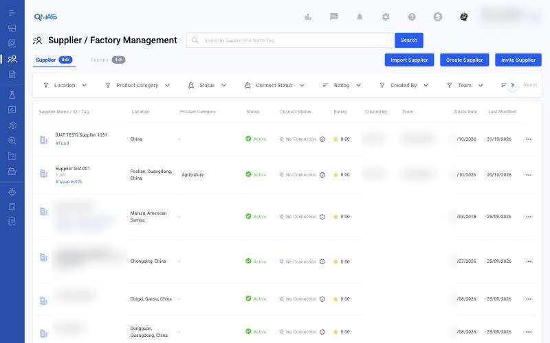
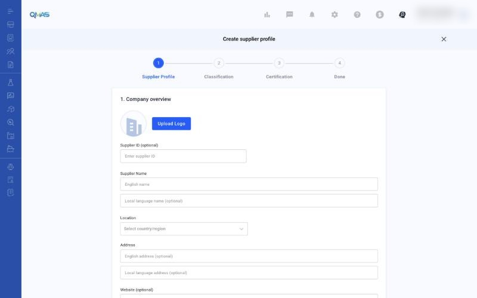
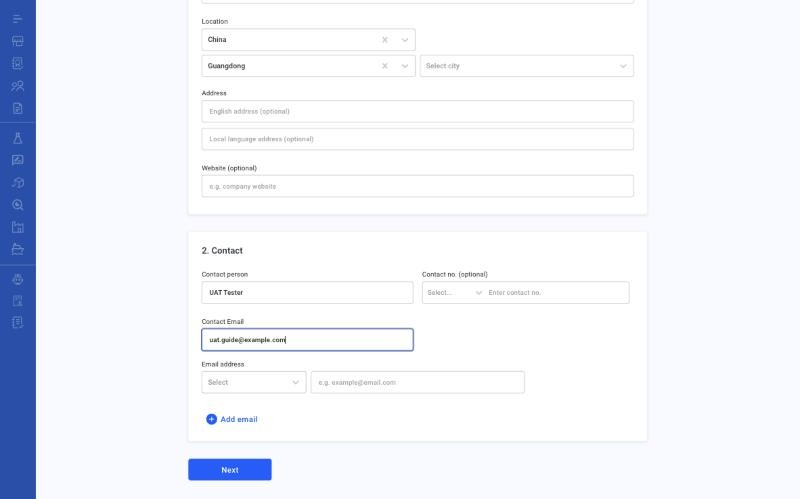
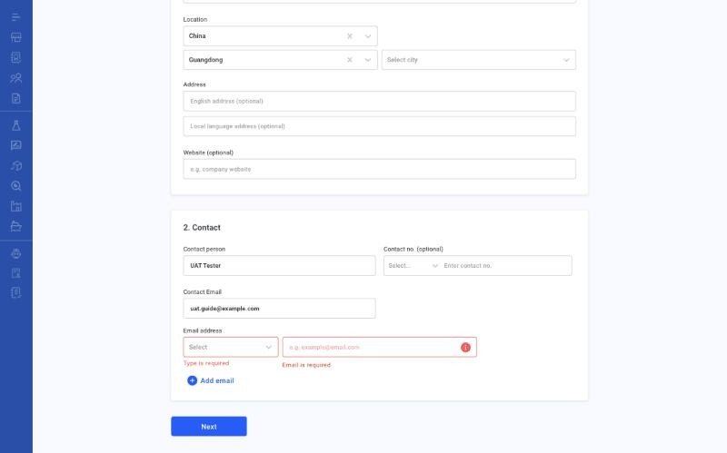
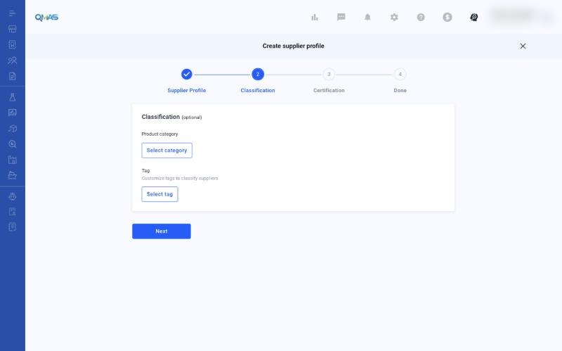
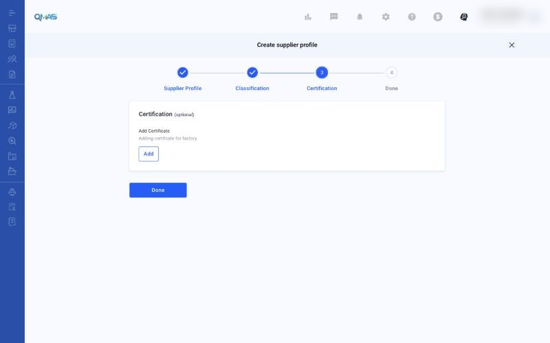
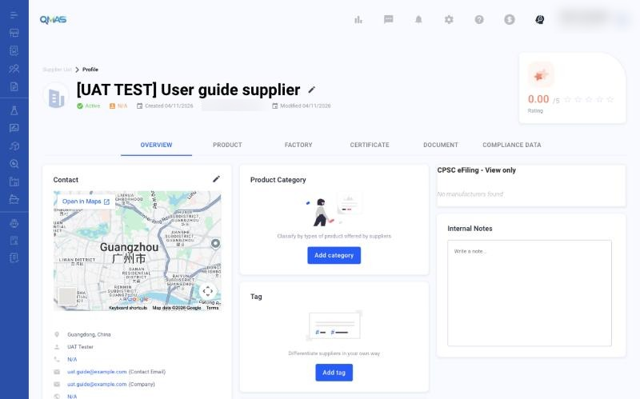

Supplier Management — Create a Supplier
Add a supplier profile so you can link it to products, factories, documents and service jobs.
Overview
- Open Supplier / Factory Management, stay on the Supplier tab and click Create Supplier.
- Supplier Profile: company overview and contact.
- Classification (optional): product category and tags.
- Certification (optional): add certificates, then click Done.
- The supplier profile opens.
Step-by-step
1. Open Supplier / Factory Management
In the left menu, open Supplier / Factory Management. The Supplier tab lists your suppliers with their location, category, status, connect status and rating.
Click Create Supplier. You can also use Import Supplier to add many suppliers from a file, or Invite Supplier to invite a supplier to connect with you on QMAS.

2. Supplier Profile — company overview
- Upload Logo (optional).
- Supplier ID (optional): your own reference number.
- Supplier Name: English name (required) and local-language name (optional).
- Location: country or region, then province and city.
- Address and Website (optional).

3. Supplier Profile — contact
Under 2. Contact, fill in the Contact person, Contact Email and at least one Email address. For each email address, choose a type: Company, QA, Sales or Other. Click Add email for more. Contact no. is optional.

If a required field is empty when you click Next, it turns red, for example “Type is required” or “Email is required”.

4. Classification (optional)
Click Select category to choose the product categories this supplier offers. Click Select tag to add your own tags. Click Next.

5. Certification (optional)
Click Add to upload a certificate. Choose the certification type, upload the file, and fill in the rating, issue party and dates. Click Done to create the supplier.

6. Done — supplier profile
The supplier profile opens. Use the tabs Overview, Product, Factory, Certificate, Document and Compliance Data to manage everything linked to this supplier. Click the pencil icon next to the name, or next to Contact, to edit.

Tips
FAQ
- How do I create a new supplier?
- Go to Supplier / Factory Management (https://qmas.icw.io/supplier-manager/suppliers), click Create Supplier, fill in Supplier Profile, then Next, Next and Done. Direct link: https://qmas.icw.io/supplier-manager/create
- Can I add many suppliers at once?
- Yes. Click Import Supplier on the Supplier tab.
- How do I invite a supplier to QMAS?
- Click Invite Supplier on the Supplier tab.
- How do I edit a supplier?
- Open the supplier from the list and click the pencil icon next to its name or next to Contact.